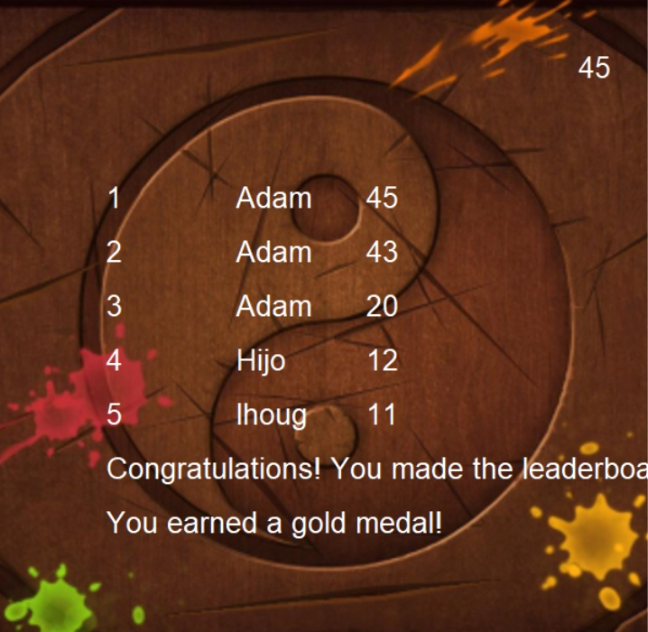

For our 1.1.9 project, we created a program that let you click and grow flowers. The program first asks the user what two colors they want the flower to be. The turtle then draws a spider, ladybug, and watering can. Then the user can click anywhere on the screen to grow flowers. While the user is drawing flowers, a bee flies around the background.
Fruit Ninja

In our 1.2.5 project, we decided to tried to recreate the mobile arcade game "Fruit Ninja." In our game, three fruits pop up from bottom of the screen that eventually fall back doen and bounce around the screen. Each time you click one your score increases. There’s background music, a timer, and a leaderboard as well.